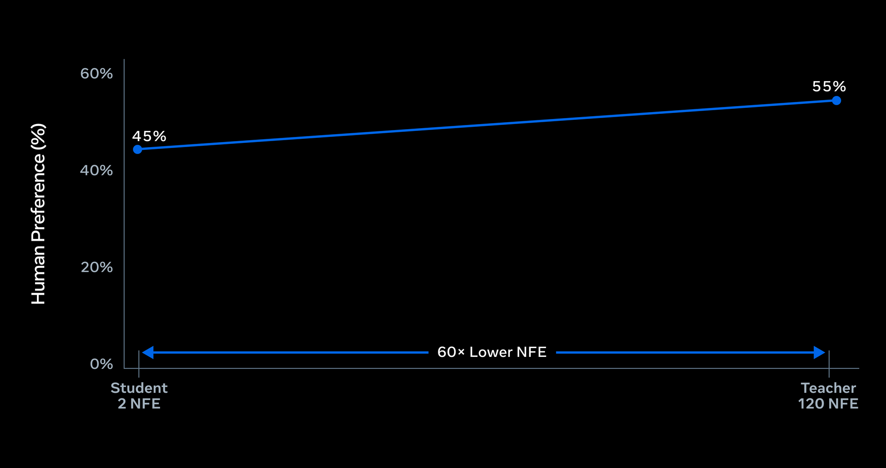

2026-09-23 · 视频专项支线 · Streaming embodiment
Muse Realtime Avatar
声音与画面共用语音VQ流；有界因果chunk将身份与动作继续下去。Self-forcing + distribution matching将教师120 NFE蒸馏到两步学生。
120 → 2NFE/chunk，不是整套延迟60×
~870 ms轮次结束→首个同步响应字节
12 sessions单GB200视频生成并发
防漂移的训练
学生在自己的生成历史上训练，固定KV窗口和近期latents回灌，匹配推理时累积误差条件。持续生成不等于无限时长质量验证。
不同基线，不相乘
60×是120→2 NFE；8×是相对两步BF16学生的serving capacity。不能相乘宣称480×用户体验提升。
产品偏好不是模块消融
2–3分钟原生live-call比较视觉、同步、角色与mannerism；Runway mannerism未与parity显著区分。
验收长程多模态
测试2/10/30分钟漂移、唇形同步、取消恢复、负载与p95。水印能追溯，不自动解决参考人物授权。
